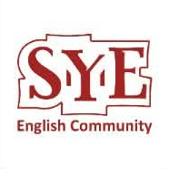
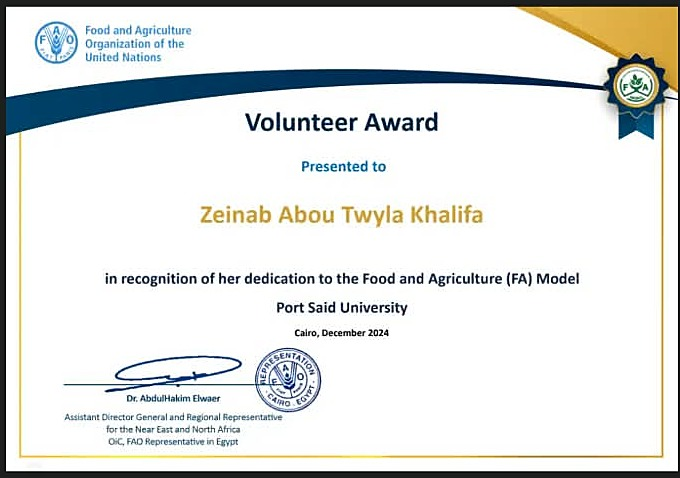

My path
Where I learned and trained
Programs, internships and university. Each training is written once here; its certificate is on the Certificates page and its tools are on Skills.
Full Stack .NET Web Developer
Digital Egypt Pioneers Initiative (DEPI), Ministry of Communications and Information Technology
- Full-stack training covering ASP.NET Core, SQL Server, and Angular.
- Building real-world projects with RESTful APIs and modern front-end frameworks.
 Next Academy
Next Academy

SYE English CommunityBusiness English Track, Round 4 ElharefaFreelancing track
ElharefaFreelancing track

Information Technology Institute (ITI)
Mobile App Development Training (Flutter)
Completed practical training in Flutter development, focusing on building cross-platform mobile applications. Gained hands-on experience with state management and UI design.
Front-End Developer Intern (Angular)
Completed intensive training in Front-End Development with Angular at ITI (120 hours): client-side technologies, ES.Next, HTML5, Bootstrap and Angular.
View certificate →.NET Developer Intern
Completed hands-on training in .NET Web Development at ITI (120 hours): SQL Server, Visual C#, ASP.NET MVC, Entity Framework and LINQ.
View certificate →
Assiut University
Bachelor of Science, Computer Science · Faculty of Science


Volunteer Award
Food and Agriculture (FA) Model, Port Said University · issued by FAO
Volunteering recognized for dedication to the Food and Agriculture (FA) Model.